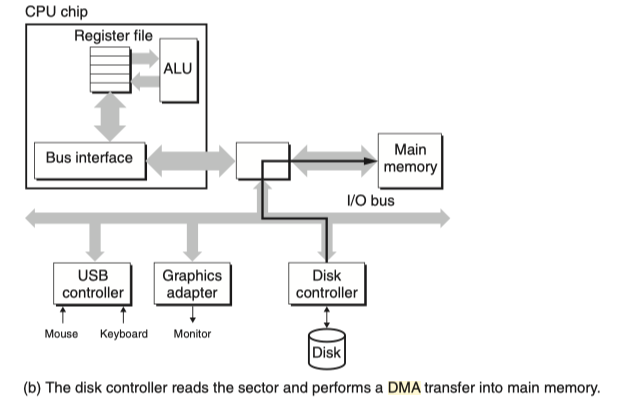

输入输出系统¶
I/O接口¶
I/O接口的基本功能 设备寻址,数据交互,设备控制,状态检测,数据缓冲.格式转换,中断,时序控制和数据检错,纠错等功能(具体看课本)

- 总线接口 按照总线标准进行设计
- 内部接口 因设备的不同而不同,是非标准的
- 数据缓存寄存器(DBR) 用于缓冲数据,匹配CPU与外部设备之间的速度差异
- 设备状态寄存器(DSR) 用于反馈设备状态 在程序查询方式中,CPU通过读取状态寄存器来判断设备的状态
- 设备命令寄存器(DCR) 用于接收CPU发送的设备控制命令
- 设备存储器 常用于设备自身的运算和处理
I/O接口的编址 I/O接口中的各种寄存器,存储器都由CPU进行统一分配设备地址,并通过对应的设备地址访问,通常可以分为统一编址和独立编址两类

统一编址 内存映射编址(Memory-mapped) 外部设备与内存地址统一编址,二者在逻辑上属于同一地址空间,通过不同区域来区分访问内存还是访问外设.
- 使用统一的访存指令访问内存与I/O设备
- 通常不能使用Cache进行缓存
- 系统I/O接口的地址是固定,而热插拔的I/O设备通常是在计算器启动过程中动态分配的
独立编址 端口映射编址(Port-mapped) I/O地址空间和主存地址空间相互独立, 此时I/O地址又称为I/O端口
- 必须使用特殊的I/O指令访问外部设备
- 系统I/O端口号通常是固定,热插拔I/O的端口号是启动过程中动态分配的
I\O控制方式

程序控制方式¶
程序控制方式(PIO) CPU直接执行一段输入输出的程序来实现CPU与外部设备的数据交换.
- 分为程序查询(轮询方式) 每次传送前都要查询设备状态,只有设备准备就绪后才可进行后续操作(条件传送)
- 直接传送 无须查询设备状态,直接进行数据交互(无条件传送)

程序查询有两种策略忙等待(独占式查询)和定时轮询
- 独占式查询策略中CPU在等待设备准备数据的过程中会不断查询设备的状态寄存器
- 定时轮询策略中CPU会通过定时时钟中断,并调度其他进程上CPU执行
程序中断控制方式¶


中断优先级和中断屏蔽字
- 中断优先级 CPU响应并处理中断请求的优先级
- 响应优先级 CPU对各设备中断请求进行响应的先后次序,在硬件线路上是固定的,不便于改动
- 不可屏蔽中断 > 内部异常 > 可屏蔽中断
- 内部异常中硬件终止属于最高级,其次是指令异常或自陷等程序故障
- DMA中断请求优于I/O设备传送的中断请求
- 高速设备优于低速设备;输入设备优于输出设备;实时控制设备优于普通设备
- 处理优先级 中断嵌套的实际优先级处理次序,利用中断屏蔽技术动态调整
- 若不采用中断屏蔽技术,则与响应优先级保持一致 中断屏蔽字
- 响应优先级 CPU对各设备中断请求进行响应的先后次序,在硬件线路上是固定的,不便于改动

- 在终端控制器中设置一个中断屏蔽寄存器(IMR),其中的每一位对应一个设备的中断源
- 为1的时候表示屏蔽对应设备的中断请求信号
- 为0的时候表示允许对应设备的中断请求信号
- 若允许多重中断则可以打断先去的中断处理程序
- CPU为每个设备分配不同的中断屏蔽字,CPU执行某设备的中断服务的时候回将该设备的中断屏蔽字载入IMR,所有中断请求回遇IMR中对应的位的值进行逻辑与

- 通过调整中断屏蔽字可以将高响应优先级的中断进行屏蔽,从而提高低响应优先级的处理优先级
- 中断屏蔽字只对CPU运行中断服务程序时的中断嵌套有用,并不具备改变CPU运行主程序时的中断响应优先级
- 同时到达的多个为屏蔽中断,只能按照响应优先级进行处理
单级中断与多重中断

- 区分二者并不是
单级中断没有优先级;多级中断有优先级 - 而是多级中断的高优先级中断可以打断低优先级的中断
中断优先级的示例
中断请求¶

- INTR 中断请求线缆 INTA 中断响应线缆
- 独立请求方式 每个中断源独立请求独立响应,方便实现向量中断,可以快速找到中断入口地址;但系统拓展困难
- 链式请求方式 所有中断源共享一条请求线缆,系统拓展容易
- 硬件查询法 CPU给出中断应答信号,通过串行电路从左往右顺序查询, 离CPU越近中断响应优先级越高
- 软件查询法 通过公共中断服务程序轮询每个中断源,优先级与轮询方式有关,越早轮询优先级越高
- 中断控制器方式 中断控制器负责实现外部中断的优先级仲裁逻辑与中断识别
- 支持中断屏蔽字技术
- 分组链式 独立请求与链式请求的折中办法

中断请求的硬件支持
- 中断请求寄存器(IRR) IRR中的内容即中断字,通过中断字确定中断源,并转入对应中断服务
- 中断屏蔽寄存器(IMR) 用于动态改变中断处理优先级
- 其内的每一位取反后与IRR中的位进行逻辑与
- IMR中为1的中断源被屏蔽,为0的中断源不会被屏蔽
- 中断服务寄存器(ISR) 在多重中断中用于存放正在被服务的中断请求,包含以及得到中断响应但中断服务尚未结束的所有中断请求.
- 普通屏蔽模式 当新的中断请求比ISR中最高优先级的中断源还高的时候才会中断当前服务.
- 特殊屏蔽模式 不判断ISR中的优先级,这样未被屏蔽的中断都可以打断当前中断
- 中断优先级排队电路(PR)
- 中断允许触发器(IE/IF) 也称中断使能位,中断标志位,用于开,关中断控制.
- 仅能关闭可屏蔽中断的中断请求
中断响应¶
中断响应的条件

中断响应过程-CPU

- CPU在进行中断响应过程不能执行其他任务
- 中断隐指令 是CPU在执行中断响应过程中这一系列操作的总称,并非真的指令
中断识别¶
中断识别通常由两种非向量中断和向量中断, 其中非向量中断即链式请求的软件查询法,通过一个公共的中断服务程序轮询设备.
向量中断

- 中断号 每个设备的中断源唯一的中断编号
- 中断号由计算机系统统一分配,通常是固定不变的
- 可屏蔽的外部中断,其中断号在中断响应周期内从中断控制器获得
- 系统调用等自陷指令的中断号由指令直接给出
- 不可屏蔽中断以及异常的中断号则有系统预先设置
- 中断向量 对应中断源的中断服务程序的入口地址(可能包括程序状态字)
- 中断向量表 中断向量的集合
- 中断向量表通常常驻内存
- 在计算机启动初期,OS内核引导阶段由硬件初始化中断向量表
- 当OS内核启动后,交给OS管理中断向量表
- 向量地址(中断指针) 用于访问中断向量表的某一表项的地址
中断的处理¶
中断VS子程序调用

中断处理的流程

- 顶半(Top half)和底半(Bottom Half) Linux中为了解决中断服务需要长期关中断的策略
- Top half 由实际中断服务程序完成,关中断执行,只完成简单的寄存器交互
- Bottom half 开中断运行,负责完成耗时较大的任务,如实际数据传输工作
- 关中断由硬件(中断隐指令)完成,而开中断则是由软件(指令)时间的
直接内存访问方式(DMA方式)¶

DMA方式 减少I/O过程中CPU用于实际传输的开销而引入的
- 由DMAC(DMA控制器)暂时接管总线控制外部设备与内存间的直接数据交换,数据无须由CPU寄存器中转
- 传输过程中CPU可以继续执行其他程序
- 设备由DMAC向CPU申请总线控制权用于数据传输
- 数据块传输结束后,使用中断请求CPU进行后处理
DMA VS 中断

内存争用问题 虽然有Cache但CPU在DMA期间仍然可能要访问主存,此时就会产生冲突,通常由三种处理办法 停止CPU访问, DMAC与CPU交替访问 周期挪用

- 停止CPU访问 在DMA期间由DMAC独占内存
- 适合高速外设
- 需要进行总线控制权的申请,建立与交换过程
- DMAC与CPU交替访问
- 将存储周期分为两部分,一部分专用于CPU,一部分专用于DMA
- 总线控制权分时控制,不需要进行总线控制权的申请,建立与交换过程
- 周期挪用 只有当DMAC需要访问主存的时候才暂停一个存储周期工DMAC访问内存,访存结束后将控制权交还CPU;若挪用周期内CPU要访问主存,则DMA优先访问主存
DMA控制器

- 地址寄存器 DMA预处理阶段由CPU设置,每次DMA传送后自增,指向下一个内存单元
- 字计数器 用于记录数据块的长度, 为0的时候DMA传输结束,发出DMA中断请求信号
- 上述DMAC被称为第三方DMA,若集成在I/O接口中,如CSAPP的那张图所示则被称为第一方DMA
DMA流程 以周期挪用方式的DMA为例

I/O通道(I/O处理机)¶
把对一个数据块以读/写为单元进行干预(DMA方式),减少为对一组数据块以读/写及有关控制和管理为单位的干预. 可以实现 CPU, 通道和I/O设备的并行操作.
通道通过执行通道程序与设备控制器共同工作来实现对I/O设备的控制.
- 通道具有独立的通道指令系统,通道指令与一般机器指令不同
- 当通道执行完响应的通道程序后,会发出中断请求来表示I/O管理结束,CPU响应请求,执行响应的中断服务程序进行处理